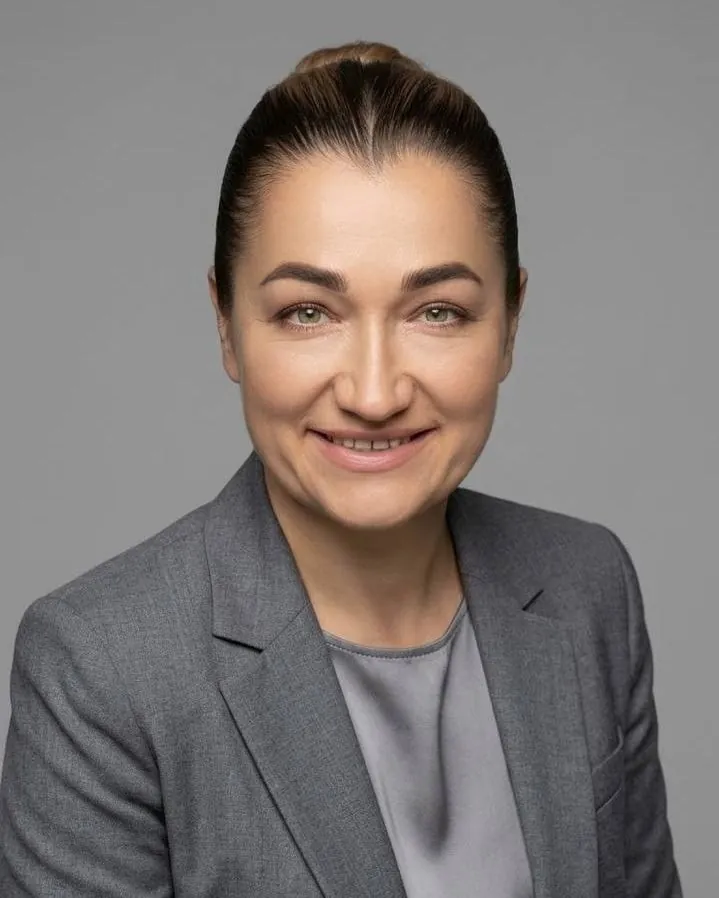

Знайомо? 🙃

Я: 15 років досвіду, десятки вирішених проблем, купа відповідальності.
Рекрутер: Які у вас зарплатні очікування?
Я: Ну… я готова розглянути ваші пропозиції 🙃
Для жінок 35+, які повертаються на ринок після паузи, переїзду або зміни сфери
Претендуй на більше. Говори впевнено з рекрутерами та роботодавцями.
≈ 920 грн за поточним курсом, оплата в гривнях
Після оплати — доступ до закритої Telegram-групи.

Ти хочеш претендувати на більше і говорити про гроші без виправдань.
Я: 15 років досвіду, десятки вирішених проблем, купа відповідальності.
Рекрутер: Які у вас зарплатні очікування?
Я: Ну… я готова розглянути ваші пропозиції 🙃
«Керувала командою»
роботодавець бачить обов'язок
«Керувала командою з 8 людей, відповідала за проєкт із бюджетом €50 000 і скоротила термін виконання на 20%»
роботодавець бачить рівень
Нічого не вигадуємо. Показуємо те, що ти вже зробила, мовою, яку розуміє роботодавець.
📲 А також: закритий Telegram-чат для питань між зустрічами і записи обох днів.
Привіт, я — Ірина 👋
Я не вчу тебе починати з нуля. Я вчу використовувати те, що ти вже вмієш.
Після 40 я сама змінила сферу: з комерційної нерухомості — в міжнародні та освітні проєкти. І добре пам'ятаю відчуття, коли за плечима роки роботи, а в резюме не знаєш, що написати.
Сьогодні я CEO Womafreesm, директорка з розвитку БО Hope – Children of Ukraine (онлайн-школа англійської для дітей, які постраждали від війни) і засновниця онлайн-школи Ukrainian for You. А на інтенсиві допомагаю жінкам побачити у своєму досвіді те, що вони самі давно перестали помічати.
З індивідуальних консультацій. На інтенсиві ми проходимо той самий шлях — у форматі двох живих зустрічей.
 Оксана, 53
Оксана, 5320 років у різних ролях. На співбесідах її бачили виконавицею, хоча вона давно доросла до керівної ролі.
СталоЧітка історія про себе, де різноплановість стала перевагою, і розуміння, куди рухатися далі.
 Ліля, 45
Ліля, 45Не розуміла, як пояснити свій професійний шлях новому роботодавцю.
СталоЧіткий напрям і слова, щоб пояснити, що саме вона може запропонувати роботодавцю.
 Таня, 41
Таня, 41Кілька напрямків одночасно. Досвід є, але зібрати його в одну історію для CV не виходило.
СталоЧітке розуміння напрямку і план дій.
 Оксана, 43
Оксана, 43Роками ставила себе на другий план і відкладала момент «вже час».
СталоКонкретний план, як заявити про себе вже зараз.
🗓 1 листопада (нд), 14:00
2 листопада (пн), 19:00за Києвом
≈ 920 грн за поточним курсом, оплата в гривнях
Оплата через WayForPay. Одразу після оплати — посилання на закриту Telegram-групу. Посилання на Zoom прийде туди за годину до початку.
1 листопада (неділя) о 14:00 і 2 листопада (понеділок) о 19:00 за Києвом. Обидві — наживо в Zoom, записи залишаються в тебе.
Так. Розберемо, як показати досвід, який був до паузи, під новий ринок — і чому пауза сама по собі не означає, що треба просити менше.
Не обов'язково. Спочатку подивимося, які твої навички та результати можна перенести в нову сферу.
Записи обох днів залишаються в тебе, а питання можна поставити в Telegram-чаті. Але наживо я розбираю конкретні кейси учасниць.
Одразу після оплати ти потрапляєш у закриту Telegram-групу. Посилання на Zoom прийде туди за годину до кожної зустрічі.
Ні. Рішення ухвалює роботодавець. Але ми працюємо з тим, що впливає на умови і що залежить від тебе: рівень вакансій, на які ти подаєшся, як описаний твій досвід і що ти кажеш, коли питають про суму.
Твій досвід уже має ціну. Дізнайся її — і навчися називати її вголос.
1 листопада (нд), 14:00 і 2 листопада (пн), 19:00за Києвом